Interpolating irregular data
Michael D. Sumner
2026-09-09
Source:vignettes/interpolating.Rmd
interpolating.RmdThis is the tour: eight ways to turn scattered measurements into a full grid, on one set of points, with one grid, so the pictures can be put side by side.
Three other articles go deeper on one thing each.
vignette("grids") is what a grid is and how to hand one to
another package. vignette("triangulation") is the Delaunay
and Voronoi tessellations and the arithmetic behind them.
vignette("projection") is what changes when the coordinates
change, and how this all lines up with GDAL.
Setup
Everything else is loaded where it is used, so it is visible which method needs which package.
Read the zooplankton data.
library(readxl)
bw <- read_excel(system.file("extdata", "BW-Zooplankton_env.xls", package= "guerrilla", mustWork = TRUE))
summary(bw[,1:10])
#> Station Lat Lon depth
#> Min. : 4.00 Min. :-69.11 Min. :29.98 Min. : 175
#> 1st Qu.: 37.25 1st Qu.:-66.84 1st Qu.:40.00 1st Qu.:1523
#> Median : 60.00 Median :-65.84 Median :55.06 Median :3065
#> Mean : 64.36 Mean :-65.46 Mean :54.60 Mean :2791
#> 3rd Qu.:100.25 3rd Qu.:-64.09 3rd Qu.:70.00 3rd Qu.:4114
#> Max. :122.00 Max. :-61.66 Max. :80.02 Max. :5075
#> temp sal chl a mg/m2) ASC (km)
#> Min. :-1.6712 Min. :33.93 Min. : 29.60 Min. :-39.600
#> 1st Qu.:-1.4726 1st Qu.:34.14 1st Qu.: 44.91 1st Qu.: 4.125
#> Median :-1.1332 Median :34.25 Median : 53.00 Median :114.950
#> Mean :-0.6755 Mean :34.22 Mean : 76.80 Mean :187.506
#> 3rd Qu.: 0.1435 3rd Qu.:34.31 3rd Qu.: 85.57 3rd Qu.:330.550
#> Max. : 0.8815 Max. :34.42 Max. :352.51 Max. :775.500
#> ice free days Total abundance
#> Min. :-35.322 Min. : 459.3
#> 1st Qu.: 6.108 1st Qu.: 4425.9
#> Median : 33.153 Median : 11346.1
#> Mean : 33.139 Mean : 23609.3
#> 3rd Qu.: 62.901 3rd Qu.: 27417.3
#> Max. :101.420 Max. :116715.8
lonlat <- as.matrix(bw[, c("Lon", "Lat")])
val <- bw$tempThe values are sea surface temperatures, so the plots use a palette meant for them, from :
cols <- sst_pal(24)Plot the temperature data.
plot(val)Create a grid to interpolate onto. The same grid is used for every method below, so the pictures can be compared.
r0 <- grid_spec(lonlat, crs = "EPSG:4326")
r0
#> <guerrilla grid>
#> dimension : 60, 50 (ncol, nrow) = 3000 cells
#> extent : 29.98, 80.02, -69.11, -61.66 (xmin, xmax, ymin, ymax)
#> resolution: 0.834, 0.149
#> crs : EPSG:4326
#> values : <none>A grid here is a list of four things and nothing else, and cell
centres come from grid_xy(). That is all the interpolation
code below knows about grids; vignette("grids") is the
whole story if you want it.
Binning
The simplest thing possible is to define a grid and drop the points into it.
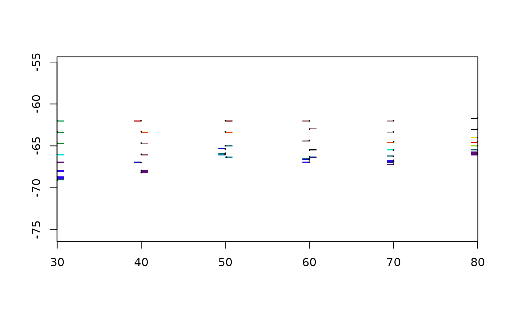
Nothing is estimated between the points: a cell with no point in it
stays NA, which is most of them. The whole of
grid_bin() is vaster::cell_from_xy() and
tapply(), and it is worth having because of the question it
forces, which every other method on this page answers without telling
you.
What happens when two points land in one cell
fun is that answer, written down.
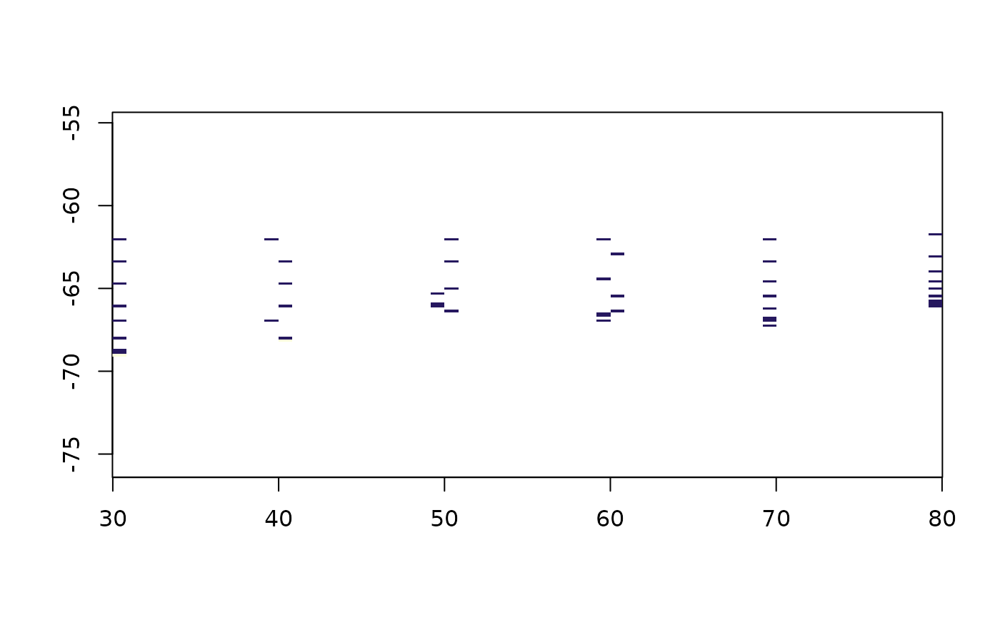
range(counts$values, na.rm = TRUE)
#> [1] 1 2The transect was sampled along a line, so cells on the line hold
several measurements and cells off it hold none. fun = mean
averages them, fun = length counts them,
fun = function(x) x[1] keeps whichever came first in the
file. The last one is what a lot of software does by default.
That count grid is the most useful picture in this vignette. Every
surface below fills the whole extent, and every one of them is inventing
the parts of it where this grid is NA.
plot(grid_bin(lonlat, val, grid_spec(lonlat, dimension = c(15, 12))))
points(lonlat, pch = 16, cex = 0.3)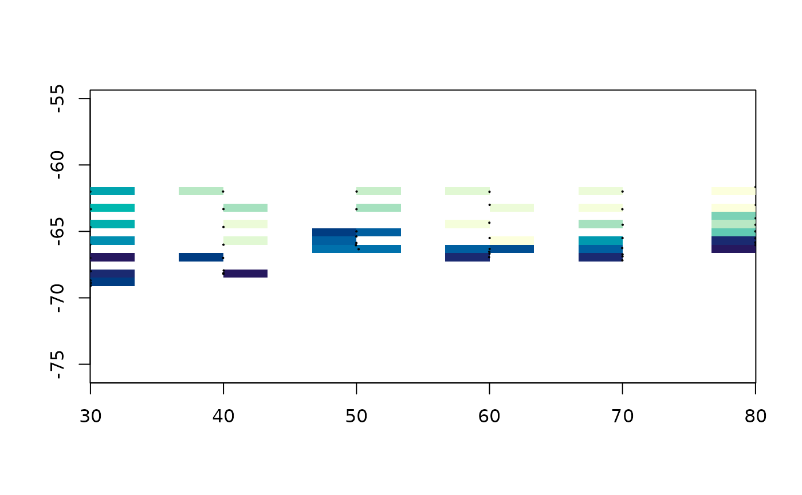
Coarser cells fill more of the grid and say less about any of it. There is no resolution that fixes this, which is the reason to interpolate.
Thin plate splines
The surface that passes near the data while bending as little as
possible. This is the engine behind GDAL’s -tps warping, so
it is also what happens when you georeference an image from ground
control points.
tpsgrid <- grid_tps(lonlat, val, r0)
#> Warning:
#> Grid searches over lambda (nugget and sill variances) with minima at the endpoints:
#> (GCV) Generalized Cross-Validation
#> minimum at right endpoint lambda = 3.169597e-06 (eff. df= 47.50002 )
plot(tpsgrid, col = cols)
points(lonlat, pch = 16, cex = 0.3)It filled the whole grid, including the corners, where there is no data within several degrees. That is not a bug and it is not a secret either, because the same fit will say how sure it is:
plot(grid_tps(lonlat, val, r0, statistic = "se"))
#> Warning:
#> Grid searches over lambda (nugget and sill variances) with minima at the endpoints:
#> (GCV) Generalized Cross-Validation
#> minimum at right endpoint lambda = 3.169597e-06 (eff. df= 47.50002 )
points(lonlat, pch = 16, cex = 0.3)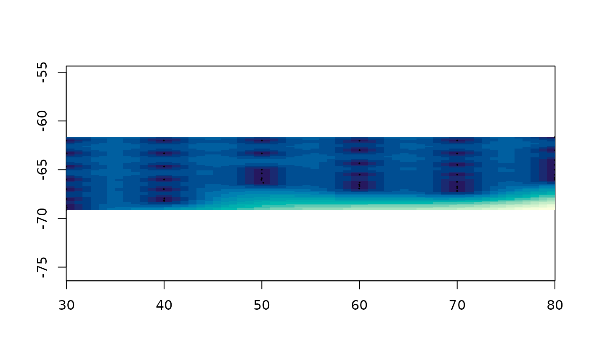
The two pictures belong together. The first says what the method thinks and the second says where it is guessing, and the second one looks a great deal like the count grid from the previous section.
Read the warning rather than ignoring it. fields
searched for a smoothing parameter, found the minimum at the end of its
range, and reports 47.5 effective degrees of freedom for 50 data points.
That is a spline passing through the data rather than smoothing it: with
fifty points along one transect there is nothing to average over, so
cross validation says do not average. method = "REML" picks
the smoothing parameter a different way and is worth comparing.
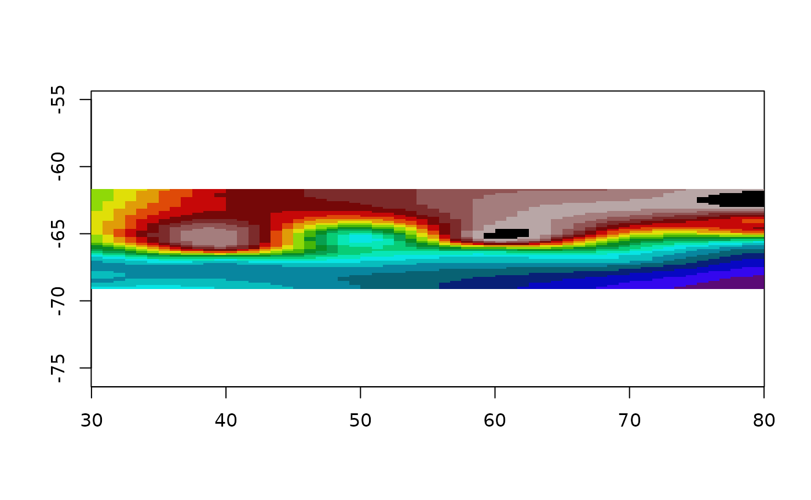
lon.lat is the one place in this package where what the
coordinates mean changes the arithmetic: a spline bends in the plane of
its coordinates, and a degree of longitude is not a degree of latitude
anywhere but the equator. It is not read off the crs,
because the guess would be wrong exactly when it mattered.
lltps <- grid_tps(lonlat, val, r0, lon.lat = TRUE)
#> Warning:
#> Grid searches over lambda (nugget and sill variances) with minima at the endpoints:
#> (GCV) Generalized Cross-Validation
#> minimum at right endpoint lambda = 0.01518704 (eff. df= 47.49805 )
plot(lltps, col = cols)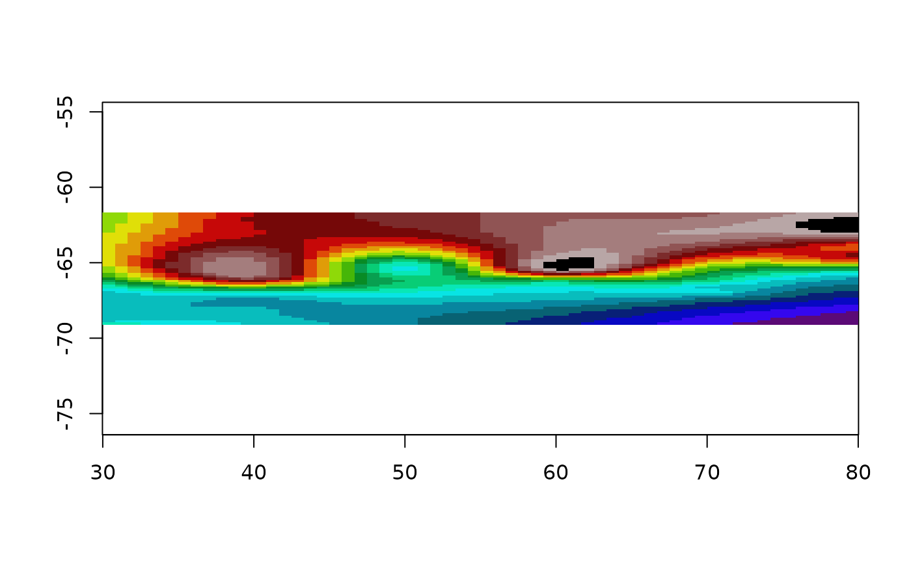
Bilinear triangulation
Triangulate the points, and inside each triangle put the plane
through its three corner values. This is what MATLAB calls
griddata(method = "linear") and GDAL calls
gdal_grid -a linear.
trigrid <- grid_barycentric(lonlat, val, r0)
plot(trigrid)
points(lonlat, pch = 16, cex = 0.3)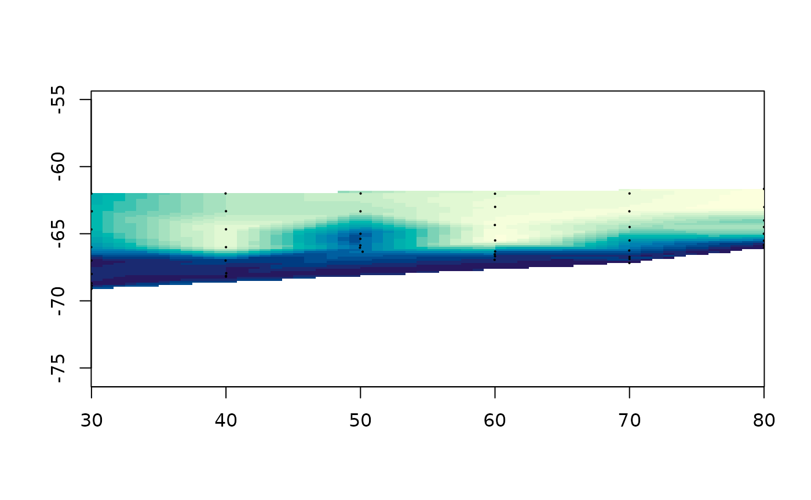
It passes exactly through the data and invents nothing beyond it, so
cells outside the convex hull stay NA. That is the honest
end of the range: no answer where there is no basis for one.
The arithmetic is barycentric coordinates, which are three numbers that are both the point-in-triangle test and the interpolation rule at once:
bary_weights(cbind(c(0, 1, 0), c(0, 0, 1)),
rbind(c(0.25, 0.25), c(1/3, 1/3), c(1, 1)))
#> [,1] [,2] [,3]
#> [1,] 0.5000000 0.2500000 0.2500000
#> [2,] 0.3333333 0.3333333 0.3333333
#> [3,] -1.0000000 1.0000000 1.0000000The third point is outside the triangle, which shows as a negative
weight rather than as a separate test.
vignette("triangulation") goes through this properly, along
with the Delaunay and Voronoi tessellations, the readable R engine, and
what the old facets() was really computing.
Nearest neighbour
vor <- grid_voronoi(lonlat, val, r0)
plot(vor)A Voronoi tile is everywhere closer to its own point than to any
other, so filling each tile with its point’s value is nearest neighbour
drawn rather than computed. Note that it filled the whole grid where
triangulation left the corners NA. Tiles cover the plane,
so nothing is ever outside them, and a cell far from any data still gets
a confident answer.
Inverse distance weighting
A weighted average of the input values, weighted by one over distance to a power. There is no model here, only a rule.
op <- par(mfrow = c(2, 1), mar = c(2, 2, 2, 1))
plot(grid_idw(lonlat, val, r0, idp = 0.5), main = "idp = 0.5")
plot(grid_idw(lonlat, val, r0, idp = 8), main = "idp = 8")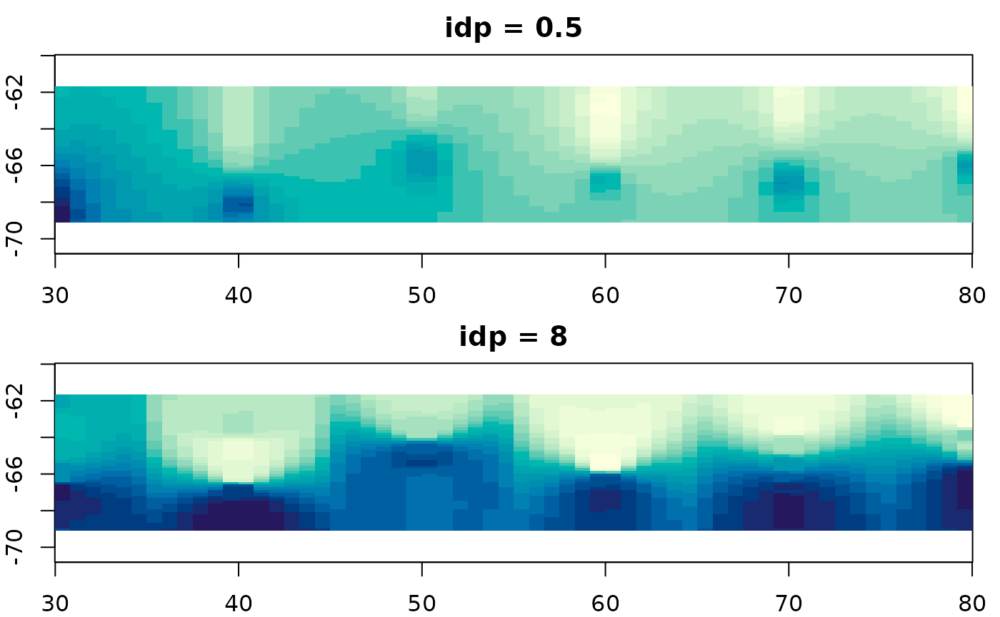
par(op)idp is the whole method. Raise it and the nearest point
dominates, so the surface tends towards grid_voronoi();
lower it and everything flattens towards the overall mean. Neither end
is more correct than the other and nothing in the data tells you where
to sit between them, which is why the default of 2 is a convention
rather than an answer.
The consequence is that this method cannot report a standard error. It never claimed to be estimating anything, so there is nothing to be uncertain with.
Kriging
The same idea taken seriously. The variogram is a picture of how much two values differ as a function of how far apart they are; kriging fits a curve to that picture and uses the curve to choose the weights.
krigrid <- grid_kriging(lonlat, val, r0)
plot(krigrid, col = cols)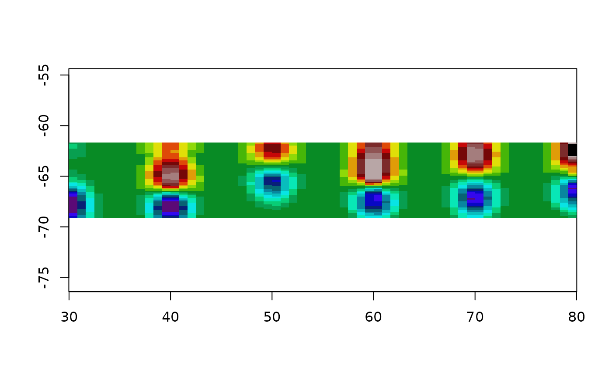
Because the weights come from a fitted model, there is a variance to go with them:
plot(grid_kriging(lonlat, val, r0, statistic = "se"))
points(lonlat, pch = 16, cex = 0.3)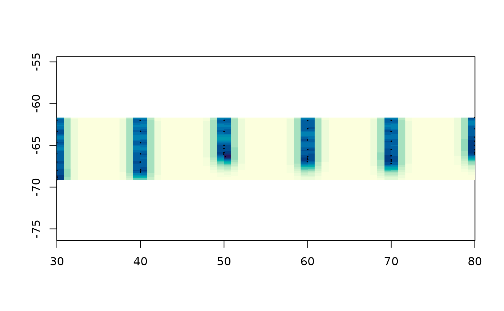
That surface is usually more informative than the prediction, and it is the reason to reach for this method rather than IDW.
It is also the only method here that can refuse. Give it values with no spatial structure and there is no curve to fit, the fit comes back with a negative range, and it stops:
set.seed(9)
noise <- cbind(runif(120), runif(120))
grid_kriging(noise, rnorm(120))
#> Warning in gstat::fit.variogram(vg, model): singular model in variogram fit
#> Error:
#> ! the variogram fit returned a model that cannot be used: a negative range or sill.
#> Usually that means these values have no spatial structure at these distances,
#> so there is nothing for kriging to weight by. Look at
#> gstat::variogram(value ~ 1, ~ x + y, data)
#> and pass a starting 'model' from gstat::vgm() if you can see structure in it.Every other method on this page will interpolate pure noise without complaint and hand you a picture of it.
Generalized additive models
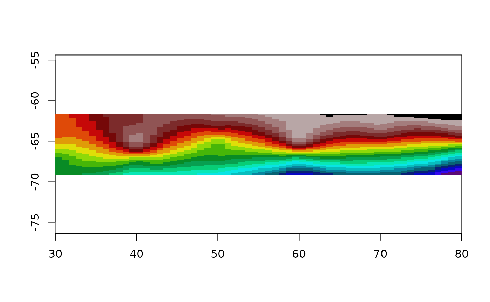
The default formula is value ~ s(x, y), one isotropic
two dimensional smooth. mgcv’s default basis for a two
dimensional s() is a thin plate regression spline, so this
is the thin plate spline from earlier with fewer basis functions and the
smoothing parameter chosen by REML. On this data the two are hard to
tell apart, which is the point.
The wrong model is instructive too:
op <- par(mfrow = c(2, 1), mar = c(2, 2, 2, 1))
plot(grid_gam(lonlat, val, r0), main = "s(x, y)")
plot(grid_gam(lonlat, val, r0, formula = value ~ s(x) + s(y)),
main = "s(x) + s(y)")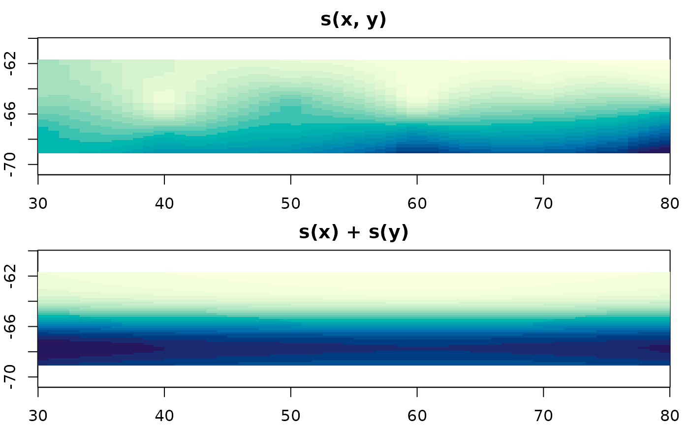
par(op)Additive in x and y means every column of the grid has the same shape as every other column, up to a shift. It cannot represent a feature that sits in one place, so it smears anything local into a cross.
Kernel smoothing
Bin first, estimate second.
plot(grid_smooth(lonlat, val, r0, theta = 1), col = cols)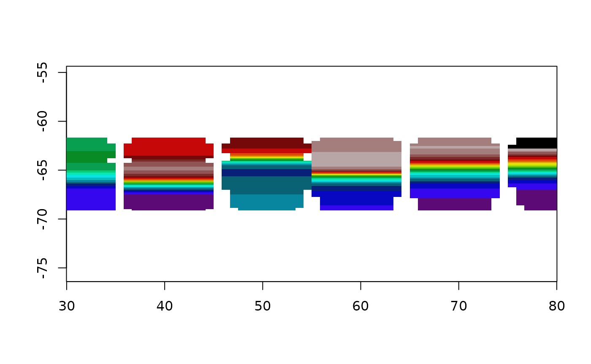
Everything else here works from the points; this one goes through a
grid on the way. The binning throws away where inside its cell each
point was, and no amount of smoothing afterwards gets that back.
theta is the kernel bandwidth, in the units of the
coordinates, and it does all the work.
Akima (via the interp package)
interp(method = "linear") triangulates and interpolates
linearly within each triangle, which is the same thing
grid_barycentric() does. Worth checking that claim rather
than believing it: on this data the two agree to within 1e-15.
library(interp)
akifun <- function(xy, value, grid = NULL, ...) {
if (is.null(grid)) grid <- grid_spec(xy)
dm <- grid$dimension; ex <- grid$extent
## interp() wants both output axes increasing, and grid rows run top-down.
## Hand it a descending yo and it returns all NA, without complaint.
aklin <- interp(xy[,1], xy[,2], value,
vaster::x_from_col(dm, ex, seq_len(dm[1])),
rev(vaster::y_from_row(dm, ex, seq_len(dm[2]))), ...)
grid$values <- as.vector(aklin$z[, rev(seq_len(ncol(aklin$z)))])
grid
}
akigrid <- akifun(lonlat, val, grid = r0)
plot(akigrid)
What the pictures have in common
Eight methods, one grid, one set of points.
op <- par(mfrow = c(4, 2), mar = c(2, 2, 2, 1))
plot(bingrid, main = "grid_bin")
plot(vor, main = "grid_voronoi")
plot(trigrid, main = "grid_barycentric")
plot(akigrid, main = "interp::interp")
plot(tpsgrid, main = "grid_tps")
plot(krigrid, main = "grid_kriging")
plot(grid_idw(lonlat, val, r0), main = "grid_idw")
plot(grid_gam(lonlat, val, r0), main = "grid_gam")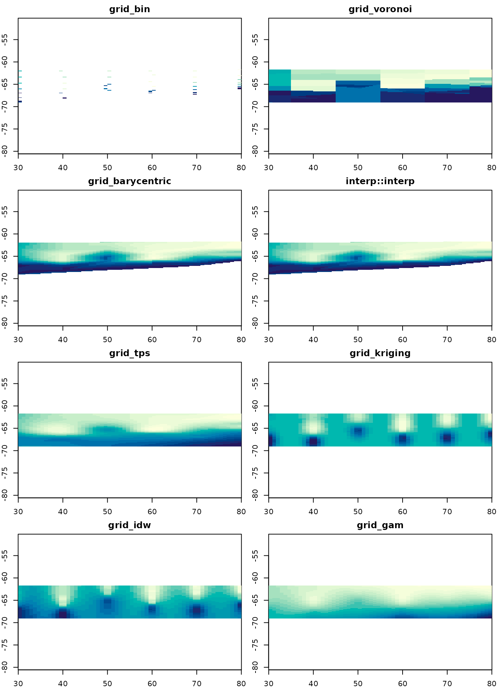
par(op)They disagree most where there is no data, and that is the only place the choice between them matters much. Near the transect they all say roughly what the measurements say, because there is nothing else for them to say.
Two of them fill only the convex hull and leave the rest
NA. Four fill the whole extent from a fitted model, and
three of those will tell you how sure they are if asked. One fills the
whole extent from a rule and cannot.
There is no method here that is right. There is a method that makes its assumptions visible and a method that does not, and the difference is worth more than the surfaces.
Where to next
-
vignette("grids")– what a grid is, and the converters to raster, terra and gdalraster. -
vignette("triangulation")– barycentric weights spelled out, the two tessellations drawn, and the readable engine that checks the fast one. -
vignette("projection")– the same data in two coordinate systems, GDAL’s own gridder, and thin plate splines as georeferencing.